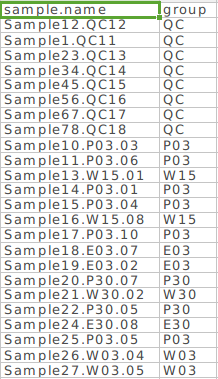

Ⅰ数据准备
MetDNA需要准备的数据包括一级数据peak table(csv格式)，二级数据(mgf格式)和样品信息sample.info(csv格式)。点击下载正离子demo数据和负离子demo数据。
Table 1: demo数据信息
| 组别 | 个数 | 含义 |
|---|---|---|
| QC | 8 | QC |
| W03 | 10 | 野生型3天 |
| W30 | 10 | 野生型30天 |
| E03 | 10 | 突变型E3天 |
| E30 | 10 | 突变型E30天 |
| P03 | 10 | 突变型P3天 |
| P30 | 10 | 突变型P30天 |
1. 一级数据
一级数据可以是使用XCMS，MZmine，MS-DIAL或者其他软件处理之后的数据。第一列为代谢物峰的名字，”name”，第二列为”mz”，第三列为保留时间(RT)，且单位必须为秒，其他为样品的峰强度。
2. 二级数据
二级质谱原始数据可以是使用QC样品采集的DDA或者targeted MS/MS数据。对于DDA数据来说，也可以是分段采集的二级数据。质谱原始二级数据需要使用ProteoWizard软件转为mgf格式，转换时参数设置参考下图。二级数据最多不能超过十个。
{kind=link}
3. 样品信息
样品信息是样品的分组信息。第一列是样品名，”sample.name”，第二列是样品的分组信息，”group”。

Ⅱ 数据整理
如果是正离子数据，请建立一个新的文件夹，命名为”POS”，如果是负离子数据，请建立一个新的文件夹命名为”NEG”，然后将一级数据，二级数据和样品信息放置于此文件夹下。并将该文件夹设置为工作路径。现在MetDNA部署在小服务器上，因此可以将数据放在小服务器中(labdata)。例如”V:/workreport/申小涛/demo/fly/POS”。
设置工作路径。
|
|
Ⅲ 数据处理
1. 只对正离子或者负离子处理
所有的步骤可以使用一个函数MetDNA全部完成。
运行函数MetDNA。
|
|
参数含义如下：
ms1.file：一级数据的名字。
polarity：数据采集极性，”positive”或者”negative”。
column：使用的柱子类型，”hilic”或者”rp”。
ce：二级采集的碰撞能量，支持”10”，”15”，”20”，”25”，”30”，”35”，”35,15” (35±15)，”40”， “45”，”50”，”55”，”60”，”65”，”70”。
prefer.adduct：使用那些加合物形式的注释用于RT预测模型的建立，默认使用所有的注释，推荐正离子模式下使用”M+H”，负离子模式下使用”M-H”。
use.default.md：进行保留时间预测模型建立时，是否使用默认的分子描述符，如果设置为FALSE，则会根据你的数据自动选择分子描述符。
threads：使用线程数，默认为3，可以根据电脑本身配置进行修改。
group：要对哪些分组的样品进行分析，注意，计算fold change时，使用后面的样品除以前面的样品。
uni.test：单变量分析的方法，”t”，Student t test；”wilcox”，Wilcox test。
correct：是否需要对p值进行FDR校正。
p.cutoff：选择dysregulated peak时的p值cutoff。
species：所研究样品的物种来源，”dme”，果蝇；”hsa”，人类；”mmu”，小鼠；”rat”，大鼠，”bta”，牛；”gga”，Gallus gallus (鸡)；”dre”，Danio rerio (斑马鱼)；”cel”，Caenorharomyces elegans (线虫)；”sce”，Saccharomyces cerevisaiae (酵母)； “ath”，Arabidopsis thaliana (拟南芥)；”smm”，Schistosoma mansoni；”pfa”，Plasmodum falciparum 3D7；”tbr”，Trypanosoma brucei；”eco”， Escherichia coli K-12 MG1655(大肠杆菌)；”ppu”，Pseudomonas putida KT2440；”syf”，Synechococcus elongatus。
2. 对正负数据合并分析
正负离子分别处理之后，可以使用函数metModule2函数合并正负离子模式的鉴定结果，进行dysregulated network analysis。
运行函数MetModule2
|
|
参数含义如下：
group：要对哪些分组的样品进行分析，注意，计算fold change时，使用后面的样品除以前面的样品。
uni.test：单变量分析的方法，”t”，Student t test；”wilcox”，Wilcox test。
column：使用的柱子类型，”hilic”或者”rp”。
correct：是否需要对p值进行FDR校正。
p.cutoff：选择dysregulated peak时的p值cutoff。
threads：使用线程数，默认为3，可以根据电脑本身配置进行修改。
species：所研究样品的物种来源，”dme”，果蝇；”hsa”，人类；”mmu”，小鼠；”rat”，大鼠，”bta”，牛；”gga”，Gallus gallus (鸡)；”dre”，Danio rerio (斑马鱼)；”cel”，Caenorharomyces elegans (线虫)；”sce”，Saccharomyces cerevisaiae (酵母)； “ath”，Arabidopsis thaliana (拟南芥)；”smm”，Schistosoma mansoni；”pfa”，Plasmodum falciparum 3D7；”tbr”，Trypanosoma brucei；”eco”， Escherichia coli K-12 MG1655(大肠杆菌)；”ppu”，Pseudomonas putida KT2440；”syf”，Synechococcus elongatus。
运行函数analysisReport得到分析报告。
|
|
Ⅳ 运行结果
1. 正离子或者负离子的运行结果
MetDNA函数运行结束之后，所有的运行结果都存放在设置的路径中，包含二级谱图匹配结果，MRN注释结果，dysregulated network分析结果以及分析报告。如图5所示。
(1) MetDNA.parameters.csv
记录此次运行所使用的参数。
(2) ms2_match_result_POS
二级谱图匹配结果。包括一个csv文件，ms2.match.annotation.result.csv和一个文件夹，MS2_match_spectra。ms2.macth.annotation.result.csv是二级谱图匹配之后的结果，与MetAnalyzer处理之后的结果相同；MS2_match_spectra文件夹中包含了所有二级匹配图(Figure 6)。
(3) MRN_annotation_result_POS
基于metabolic reacion network注释结果。包括两个csv文件，metABM.parameters.csv和MRN.annotation.result.csv。MRN.annotation.result.csv是使用MRN注释结果(Figure 8)。
其中：
annotation.from.ID：该peak的该注释来自于哪个metabolite(ID);
annotation.from.peak：该peak的该注释来自于哪个peak;
ID：注释代谢物结果的KEGG ID;
compound.name：注释结果的名字；
isotope：同位素信息；
adduct：加合物信息；
Formula：化学结构式；
score：注释打分；
peak.group：peak group；
confidence：对注释的peak group打分。
(4) Dysregulated_network_analsysi_result_POS
Dysregulated network分析的结果。其中包括一个pdf文件，volcano.plot.pdf(Figure: 9)，两个csv文件，metModule.parameters.csv和DNA.annotation.result.csv以及两个文件夹，module_information(Figure 10)和pathway_inforamtion (Figure 11)。
1) volcano.plot是选取差异代谢物峰的火山图。
2) DNA.annotation.result.csv是通过dysregulated network对注释结果进行筛选以及KEGG database注释之后的注释结果。
3) module_information文件夹中包含了dysregulated module的分析结果。其中module.result.csv是module的信息。module.overview.pdf是module结果的总览(Figure 10)。module.heatmap.pdf是对module进行定量分析之后的热图(Figure 11)。boxplot文件夹中包含了module在两组间的定量结果(Figure 12)。Module_MSE analysis文件夹中包含了对每个module进行功能注释(MSEA)的结果(Figure 13)。


3) pathway_information文件夹中包含了pathway的分析结果(Figure 14)。
其中：
boxplot：该文件夹中含有每个pathway的定量信息;
dysregulated.network.overview：该图表示dysregulated network的pathway分析结果;
dysregulated.netwrok.MSEA.csv：dysregulated network的MSEA分析结果;
dysregulated.netwrok.MSEA.pdf：dysregulated network的MSEA分析结果;
dysregulated.networks.for.cytoscape.txt：用于cytoscape作图的数据；
dysregulated.networks.attribute.txt：用于cytoscape作图的节点属性数据；
pathway.heatmap.pdf：dysregulated network的pathway定量的heatmap。